Rich's digital garden
Considering arcadia in the pandemic
Pre-pandemic, the Peak District uplands were my landscape for urban escapism, now I’m recondsidering them in favour of nearby spaces.
l.
Standing in a car park to steal wifi in the freezing winter night is probably not the image that comes to mind when considering the Peak District. Edale has many conveniences. Two warm pubs, a small but convenient store that sells everything from fresh vegetables to camping gas, a decent coffee shop and an active train station for transport. Everything you could want for a camping trip, except for a phone signal with o2.
Using the wifi, an ordnance survey map is downloaded ready to prepare for tomorrow's walk. The aim is to reach Kinder Scout plateau as comfortable as possible. Routes such as Jacob's Ladder are too far with little gain, Grindslow knoll is too steep, and Grindsbrook clough is too much work with it being a scramble. Like Goldilocks looking for her porridge marked on a map, I settle on a pathway known as the Nab. A dotted zigzag running swiftly through contour lines as convenient as Edale.
We go to bed when it is too cold to sit out in the open and talk. A stream flowing alongside my tent lulls me to sleep, only to be woken by louts returning from the pub, laughing at their inability to open a tent. Only the babbling of the stream continues.
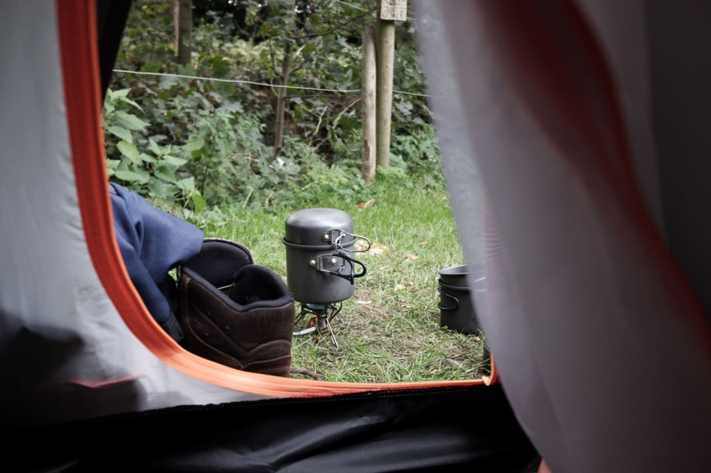In the morning, the sun gently warms the tent, implying a sunny day. Reaching out from a comfortable sleeping bag, the stove is lit to make coffee. I drink my first cup scowling at the weary campers who had woken me.
{kind=link}
Another cup of coffee, accompanied by porridge, we prepare for the walk. At the store, we buy cans of cold brew coffee and flapjacks. Despite the early start, already, there are streams of people proceeding their way from the train station and car park towards Kinder Scout and the Pennine Way. Edale starts to feel like a busy town.
At the foot of the Nab, the number of people declines. Instead, there are sheep. A herd grazes by a sheepfold, an agricultural relic crumbling under a clump of low lying trees growing within. Higher up, the sheepfold is a part of a greater network of dry stone walls spanning the lower depths of the valley, imposing erratic geometric shapes upon the landscape. The zigzag shape of the Nab is from the same ilk, snaking upwards along the hill.
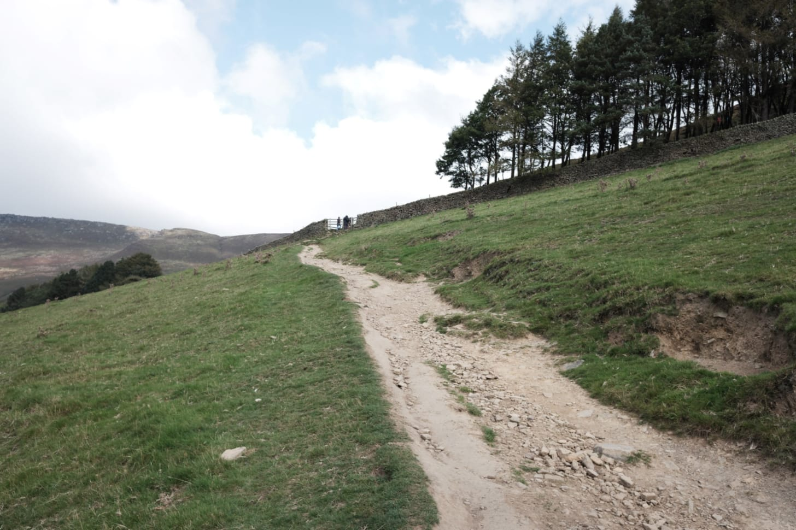At the top, there are relentless aggressive gusts. We light stoves in the shelter of smooth dark tors, making lunch among the stones while looking out over the plateau edge. Besides the various gritstone tors and streams, the plateau itself has little to look at. It is primarily an open landscape of grass, heather and moss growing in peat. Ascending Kinder Scout is to gaze outwards at the view.
{kind=link}
Heading West along the edge, we come to Grindsbrook Clough. Crossing the precarious ford, a mother stops shouting at her children meandering up the clough to warn us about the wind "around the corner". Out of the clough, the wind does pick up, in places pushing bodies towards the edge. Hoods go up and the pace quickens.
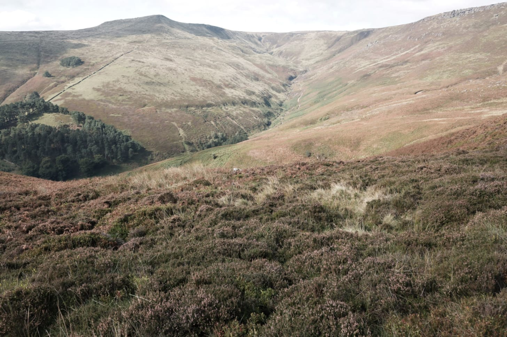Looking towards Grindsbrook
{kind=link}
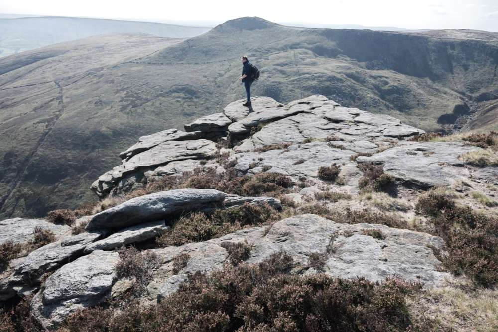Looking out
{kind=link}
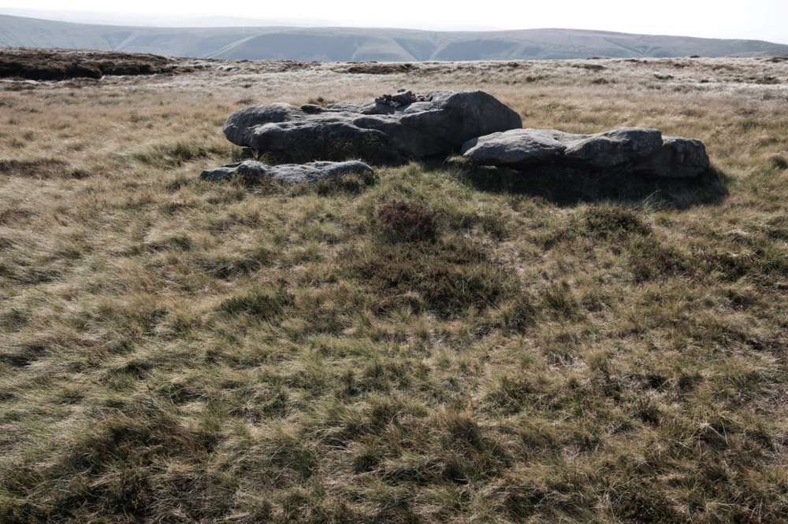Looking in
{kind=link}
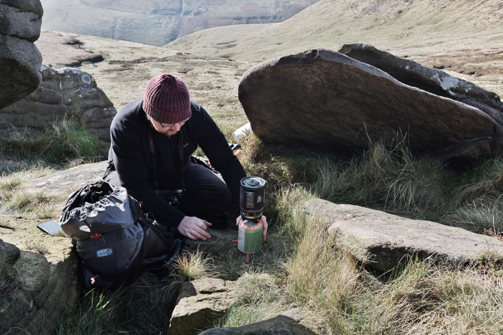Sheltering from the wind
{kind=link}
At Grindslow Knoll, we stop one last time, sheltering from the wind, to look out from the edge. Manchester is a distant grey mass. How many are there looking back at me, looking towards Kinder Scout and wishing they were here?
Down into Grindsbrook Booth amongst the sheep again. Shins and feet ache from the descent, but the wind is absent and it is warm in the sun. In the village, everything has a gold-brown glow and long stretching shadows. The nags head pub appears full with a covid-restriction queue of late afternoon visitors pouring into the road ignoring idle waiting cars. Staff shout at them to move. Disappointed, yet drunk enough from the sun, we have Guinness and curry at the tent listening to the constant stream.
Spend two hours sitting in a bushy suburban garden anywhere in Britain, and you are likely to see more birds, and of a wider range of species, than you would while walking five miles across almost any open landscape in the uplands (Monbiot, 2014).
ll.
The dog found it first. A sorry sight. Its breast open and head to one side, a dead Kestrel lay in the snow. Searching for identification only leads to a blank orange ring. Had someone already removed its metal ring? The dog, shooed away from the bird, plays with the other dogs in the park. They run circles around us. This is not the lofty viewpoints of the Peak District but a small suburban park. It's an open space with a modest playground, two benches, two bare sycamore trees, and two bins with mounds of bright coloured dog waste bags.
Only recently, we encountered a different, much younger juvenile Kestrel. Not far from the suburban park in the urban fringes of the edgelands. Hunting across a snow-covered pathway, it's speckled breast silently glided over us. It's a familiar sight.
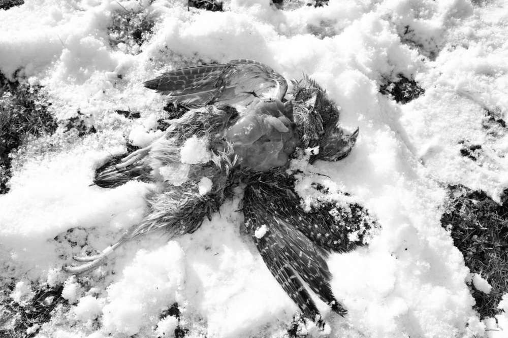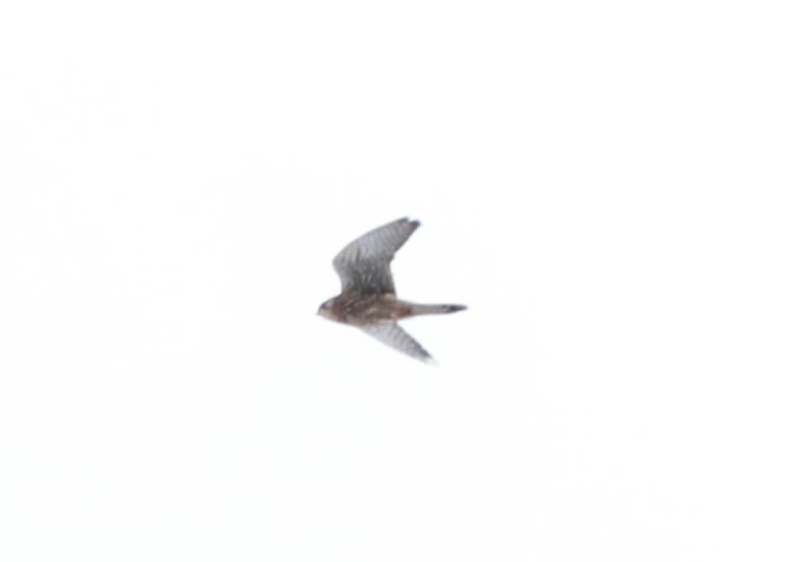Birds of prey are a regular occurrence on my walks in the suburbs, edgelands, and agrarian countryside. They are a small portion of the nearby nature, but one that enforces a wildness through their predatory role. Often I don't need to leave home to see them. In the stuffy summer of the first lockdown. I spent cool mornings in the shaded garden drinking coffee and watching huge wingspan silhouettes circling high against a deep blue. The ominous profiles belonged to Buzzards, their mewing cat-like calls fell from the morning skies.
{kind=link}
{kind=link}
Aside from birds of prey, garden birds are frequent. Whether at home on the bird feeders or at nearby open spaces. A few hundred Starlings remain local. In late evenings, a murmuration of starlings can be seen at the park as they drift and glide before roosting on the only two sycamore trees. Small mammals are also present. Mice visit the garden to feed on the seeds dropped from the bird feeders. Their corpses, sometimes numerous, litter the lawn, plausible victims of a cat in the night.
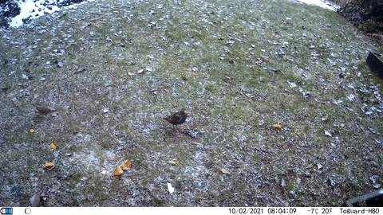A starling looking at the camera
{kind=link}
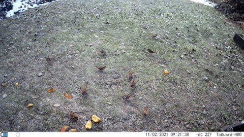A host of sparrows
{kind=link}
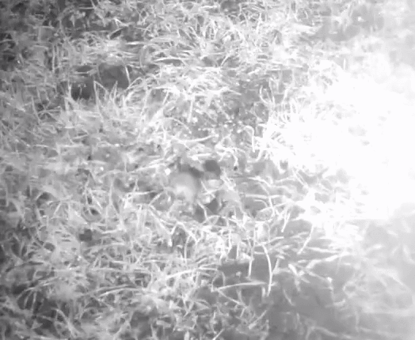A mouse visiting the garden
{kind=link}
Sightings of fauna are important visual experiences, a source of awe in everyday life. For example, a hare jump scaring me in the underbrush, darting into a field and out of sight, an unexpected but a welcome spectacle. These are experiences I lack within the uplands, places advertised as romantic wild scenery, that are in reality ecological deserts.
It's not just the absence of fauna within the uplands but the flora too. The uncontrolled plant life that sprawls across urban wildscapes and edgeland sites are more interesting and varied than a managed moorland used for grouse shooting and sheep, yet the latter is romanticised and hailed.
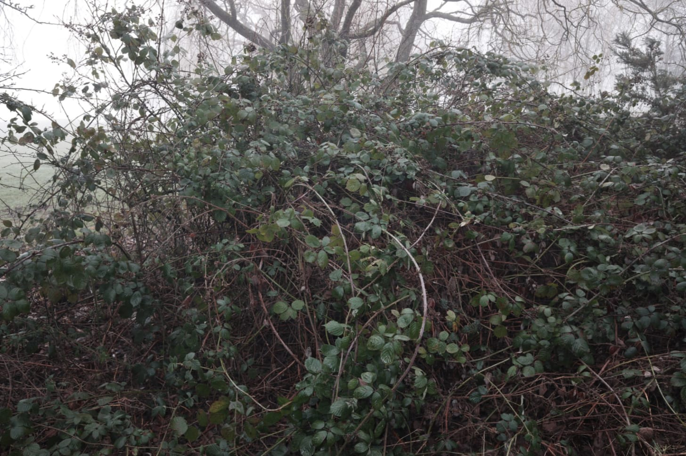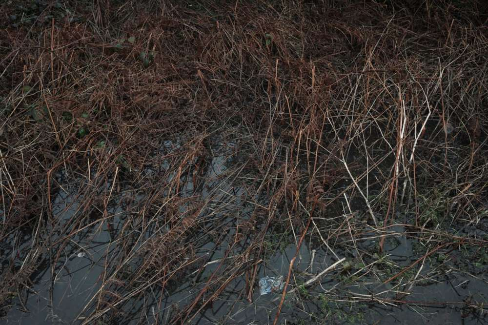My problem, as a photographer, is to capture the value of what is essentially thick brambles and plants associated with, or known as, weeds. The lack of value arises from negative connotations of unproductive wasteful land and association with nuisance plants growing where they should not. This results in attitudes to unorganised nature as not being aesthetically pleasing as neatly arranged gardens.
{kind=link}
{kind=link}
In Britain, like the rest of the western world, we subscribe to arcadian visions of nature. A utopian harmony of culture and nature. In reality, seen through western culture, the real acardia is a dystopia of nature left to carry out biological processes within unused and unwatched spaces. It is not a clear cut dystopia though as the numerous photographers subscribing to the austere edgeland hyperbolic trope will have you believe.
Birds and small mammals use our urban open spaces and gardens as green corridors, sometimes encouraged to do so through feeding or by design. This nature is not an untamed pristine wilderness, but a new wilderness formed through cultures oversight and modest encouragement where it deems suitable. It is a complex combination of hybrid culture-nature relationships within an Anthropocene landscape. Even the brutal Kestrel I found has a marker near its tapered black talons, it does not deter its value as a wild bird of prey. I still appreciate it all the same.
Further reading
- Gilles Clément’s Third landscape overview & Manifeste du Tiers-Paysage
- [paper] Anna Jorgensen & Marian Tylecote: Ambivalent landscapes—wilderness in the urban interstices (2007). Explores the benefits of interstitial wild spaces. Jorgensen also edited a collection of urban wildscape essays.
- George Monbiot's Feral
Bookmarks
- Beauty, Serenity, Stillness: An Ode to the Final Miles of the Mississippi River - nytimes piece by Matthew D. White.
- Cassian Gray celebrates the essential work of Kingston’s postal workers - environmental portraiture of posties.
- How Sweden is taking back parking spaces to improve urban living - like Guerrilla gardening but with pop-up public spaces.
- Adam Curtis explains the modern world in Can't Get You Out of My Head.
- Anthotype printing with plant dyes.
This article is from my newsletter. Consider subscribing, it's free and weekly.
Created
14/02/2021
Topics
Roadside Picnic
Pandemic
Travel
Camping
Urban Spaces
Nature